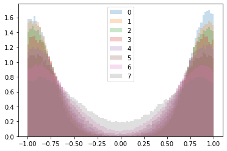

[5]:
from matplotlib import pyplot as plt
import pandas as pd
[6]:
num_chains = 8
samples = []
for c in range(num_chains):
samples.append(pd.read_csv('test_data/samples_' + str(c) + '.csv'))
[7]:
plt.figure()
for i in range(num_chains):
plt.hist(samples[i]['x0'], density=True, alpha=0.245, label=str(i), bins=100)
plt.legend()
plt.show()

[ ]:
[ ]:
[ ]: